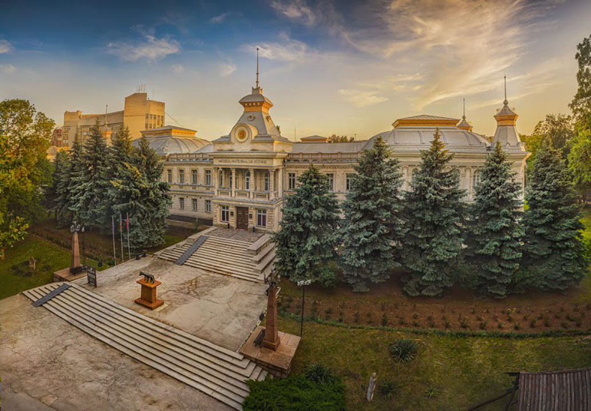

Muzeul Național de Istorie – unul din cele mai importante muzee din țară
Patrimoniul impresionant al Muzeului Național de Istorie a Moldovei a evoluat în timp, inițial fiind alcătuit din colecțiile Muzeului Gloriei Militare și cele de istorie ale Muzeului de Stat de Istorie și Studiere a Ţinutului Natal. În fiecare an, acest patrimoniu a fost îmbogățit cu piese tot mai semnificative, aducând o reală valoare științifică, prin intermediul cercetării, donațiilor și achizițiilor.